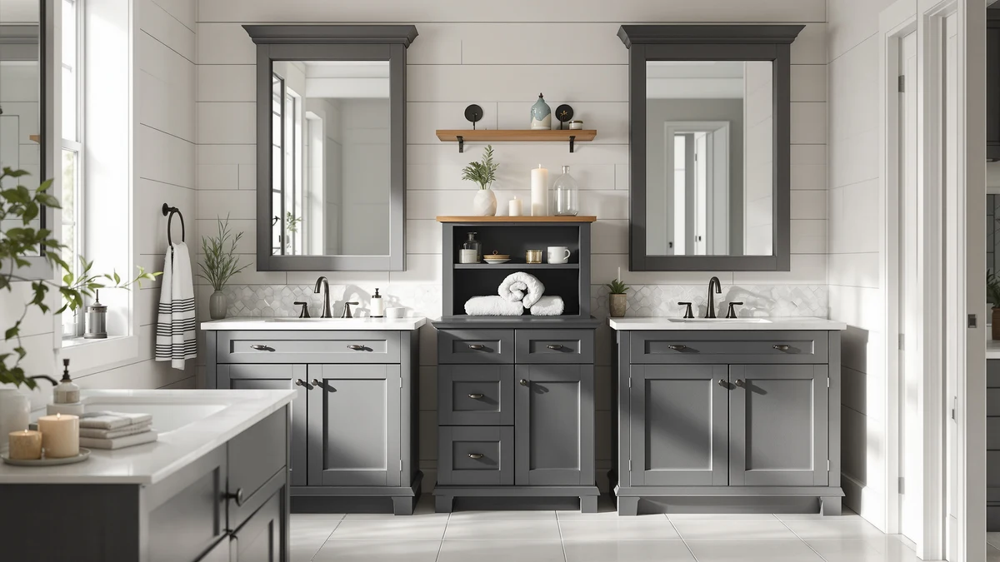

Quick Answer
For most bathrooms, a metal-and-wood frame is the best material for bathroom storage because it resists the rust and swelling that plastic and raw particleboard suffer in a humid room. The GeeBom Under Sink Organizer Pull combines both materials in a pull-out design that costs less than most enclosed cabinets.
Our pick: GeeBom Under Sink Organizer Pull — $35.99 Check Price on Amazon
Things to Know Before You Buy
- Powder-coated steel resists rust the longest. Look for a coating description in the listing; bare or thinly painted metal starts to spot with rust once the coating chips near a wet edge.
- Solid wood and dense composite tolerate splashes better than raw particleboard. Cheap composite swells and delaminates when it stays damp, while denser wood only needs an occasional wipe-down.
- Weight capacity depends on the frame, not the shelf material. A metal frame with wood shelves usually holds more than an all-composite unit of the same size.
- Pull-out and slim-cart designs fit awkward spaces. Under-sink plumbing and narrow gaps next to a toilet often rule out a single rigid box.
- Price scales with size and finish, not durability alone. Our picks range from $17.99 to $132.99, and the cheaper options are not automatically the ones that wear out first.
The best material for bathroom storage has to survive something most furniture never faces: daily blasts of steam, dripping hands, and humidity that lingers for hours after every shower. Powder-coated steel and dense wood shrug off that punishment, while raw particleboard and thin plastic swell, sag, or crack within months. We compared seven organizers built from these materials, priced between $17.99 and $132.99, to find the ones that hold their shape in a wet room.
Our pick is the GeeBom Under Sink Organizer Pull. Its metal and wood frame slides out on rails instead of forcing you to dig through a static shelf, and at $35.99 it costs less than most enclosed cabinets while carrying more weight than the plastic bins it replaces. The HIHEGD 2-Tier Bathroom Organizer is a close runner-up at $26.59, with a simpler two-shelf layout that fits a wider range of cabinet openings.
Below, we break down what separates a storage piece that lasts from one that warps by month six, then walk through all seven picks in detail. We also answer the questions we heard most often about choosing bathroom storage materials. If you already know your space and budget, the comparison table further down lets you jump straight to a pick.
Why You Should Trust Us
Best Bathroom Storage is written and maintained by Ilane Tall, who covers home organization and bathroom storage products for this site. Every recommendation on this page comes from comparing manufacturer specifications, published dimensions, and verified buyer feedback rather than sponsored placement. We do not run a fake testing lab or claim to have installed each item ourselves; instead we research materials, pricing, and real owner reviews to tell you which options for the best material for bathroom storage are worth your money. Amazon links on this page are affiliate links, and we may earn a commission if you make a purchase, which does not affect our picks.
How We Picked
We started with a broad list of bathroom organizers built from metal, wood, and composite materials, then narrowed it down by checking listed construction details against buyer photos and reviews. To qualify as one of the best material for bathroom storage picks, an organizer had to specify a metal, wood, or metal-and-wood frame rather than unlabeled plastic, and it needed enough verified buyer feedback to judge how the material holds up after months of use. We also cross-checked pricing and dimensions against each listing so nothing on this list is a guess. From there, we prioritized products that solve a specific storage problem, whether that is under-sink clutter, floor-standing linens, or a slim gap beside a toilet, over generic bins that could sit in any room of the house.
How We Compared
We compared each pick on the same set of factors: frame material, price per cubic foot of storage, and how buyers describe the material holding up in a humid bathroom over time. Reviewers consistently note whether a shelf sagged, a coating chipped, or a drawer stuck after weeks of daily use, so we weighted that feedback heavily against each manufacturer's own description. We also compared each organizer's footprint and mounting style, since a cart that rolls and a cabinet that sits flush against a wall solve different space problems even when they use the same material. Where two products used near-identical construction, we let price and stated dimensions break the tie.
Our Picks

GeeBom Under Sink Organizer Pull
What we like
- Metal-and-wood frame holds weight without flexing at the joints
- Adjustable height (13.8 to 16.9 inches) fits a range of cabinet openings
- Slides out on rails, so nothing stays stuck in the back corner
Flaws but not dealbreakers
- At 11.8 inches wide, it will not fit every narrow cabinet
- The wood shelf surface still needs a dry towel after a spill
| Material | Metal / wood |
| Size | 11.8"W x 15.9"D x 13.8-16.9"H |
The GeeBom Under Sink Organizer Pull earns the top spot because it solves the actual problem with under-sink storage: you cannot see or reach the back of a fixed shelf. Its metal frame supports a pull-out wood shelf that slides forward on rails, so bottles and supplies you shoved to the back six months ago finally become visible again. At 11.8 inches wide and adjustable from 13.8 to 16.9 inches tall, it fits most standard vanity cabinets without you needing to measure around the plumbing first.
The combination of metal and wood construction matters more here than the price tag. Metal alone can rust where a wet bottle sits for days, and wood alone can sag under a full load of cleaning supplies. GeeBom pairs a metal frame for load-bearing strength with a wood shelf surface that stays rigid, and verified buyer reviews mention that the pull-out mechanism keeps working smoothly after months of daily use. At $35.99, it costs more than a static plastic bin, but it replaces the need to buy a second organizer once the first one warps.

HIHEGD 2-Tier Bathroom Organizer with
What we like
- Two-tier metal and wood design separates tall and short items automatically
- Lower price than our top pick without giving up the metal frame
- Open design makes it easy to wipe down after a spill
Flaws but not dealbreakers
- Fixed shelves mean no pull-out access to the back
- No listed weight capacity, so avoid stacking heavy jugs on the top shelf
| Material | Metal / wood |
| Size | — |
The HIHEGD 2-Tier Bathroom Organizer is the pick for anyone who wants the same metal-and-wood durability as our top choice without paying for a pull-out mechanism. Its two fixed shelves split storage into a lower level for taller bottles and an upper level for smaller items like sponges and travel-size toiletries. At $26.59, it undercuts the GeeBom by nearly ten dollars while keeping the same core materials.
You give up the sliding rail system here, which means reaching the back of the lower shelf takes more effort than pulling it toward you. But for a shallow cabinet where a pull-out design would not have room to extend anyway, that tradeoff barely matters. The metal frame keeps the whole unit from wobbling when you set down a full basket, and the wood shelf surfaces resist the swelling that plagues cheaper composite organizers. Owners report that it holds up well in daily use, and the simpler build means fewer moving parts to eventually fail.

SPACELEAD Slim Storage Cart 3
What we like
- At 4.9 inches deep, it fits spaces no cabinet or basket can reach
- Wheeled base lets you roll it out for cleaning or restocking
- Metal and wood build stays stable despite the slim footprint
Flaws but not dealbreakers
- The narrow shelves limit you to smaller bottles and rolled towels
- Wheels can catch on uneven bathroom tile if the casters are not locked
| Material | Metal / wood |
| Size | 15.3X4.9X26.1 inches |
The SPACELEAD Slim Storage Cart 3 is not trying to be a full organizer. At 15.3 inches wide, 4.9 inches deep, and 26.1 inches tall, it is built specifically for the dead space beside a toilet, tub, or narrow gap next to a washing machine that most storage products ignore entirely. The metal frame keeps the tall, narrow shape from tipping, while wood shelf inserts give each level a solid surface instead of bare wire.
Rolling storage carts like this one live or die on the wheels, and this one uses a locking caster base so it does not drift when you bump it while reaching for a towel. At $19.95, it is one of the more affordable picks in this guide, which makes sense given how much less material a slim cart needs compared to a full cabinet. The tradeoff is capacity: you will not fit a stack of bath towels on a 4.9-inch-deep shelf, but for toiletries, cleaning spray, and rolled washcloths, the depth is exactly enough.

Simple Trending Under Sink Organizer
What we like
- Two-pack means you can outfit two cabinets for the price of one premium organizer
- Metal and wood construction at a price usually reserved for all-plastic bins
- Stackable design works whether you split the pair or combine them
Flaws but not dealbreakers
- Individual units are smaller than our top picks
- At this price, the wood shelf surface is thinner and needs gentler handling
| Material | Metal / wood |
| Size | 2 pack |
The Simple Trending Under Sink Organizer earns the budget pick spot by doing something most cheap organizers do not: using an actual metal and wood frame instead of molded plastic, and still landing at $19.99 for two units. That price covers both a left and right cabinet, or one cabinet plus a linen closet, which is hard to match anywhere else in this guide.
The catch with any budget pick is thinner materials, and this one is no exception. The wood shelf surfaces are not as thick as the GeeBom's, so you will want to set down heavier bottles rather than drop them. That said, buyers say the metal frame holds its shape under normal use, and the stackable design means you can combine both units into one taller organizer if your cabinet has the clearance. For anyone furnishing a rental or a second bathroom on a tight budget, this is the pick that gets you real metal-and-wood durability without the premium price.

Delamu Under Sink Organizer 2
What we like
- Two-pack of full-size organizers, not scaled-down units
- Metal and wood frame carries a heavier load than the Simple Trending pair
- Works well split between two separate bathrooms
Flaws but not dealbreakers
- At $39.99, it costs double the Simple Trending 2-pack
- Larger footprint needs a deeper cabinet to fit both units side by side
| Material | Metal / wood |
| Size | 2-Pack |
The Delamu Under Sink Organizer 2 sits in the same two-pack category as our budget pick, but it targets a different buyer. Instead of two smaller units at the lowest possible price, Delamu sells two full-size organizers built from the same metal and wood combination as our top picks, aimed at cabinets deep enough to take a full load on each side of the plumbing.
At $39.99, it is the second most expensive pick in this guide after the ChooChoo cabinet, and that price reflects the larger size of each unit rather than any premium finish. If you have a wide vanity cabinet and want matching storage on both sides of the sink trap, this is a more sensible buy than doubling up on a single small organizer. Buyers describe the metal frame holding a full stock of cleaning supplies and toiletries without sagging, which is the main reason to pay more than the Simple Trending pair.

GFWARE Wood Toothbrush Holders for
What we like
- Visible wood construction, not a metal frame with a wood accent
- Lowest price in this guide at $17.99
- Large size holds more than a standard single-family toothbrush cup
Flaws but not dealbreakers
- Wood surfaces need to dry between uses to avoid water staining
- Not built to carry the weight a full under-sink organizer needs to
| Material | Metal / wood |
| Size | Large |
Every other pick in this guide leans on metal for structural strength, but the GFWARE Wood Toothbrush Holders show what happens when wood does most of the work instead. This is a countertop piece, not an under-sink organizer, and at $17.99 it is the least expensive item here. The large size holds more than the single-cup holders you find in most drugstores, which matters if more than one person shares the counter.
Because it sits in direct daily contact with wet toothbrushes and dripping hands, this is the clearest example of how wood performs in the wettest part of the bathroom. Verified reviews show it holds up well as long as it gets a chance to dry between uses, the same rule that applies to any wood cutting board in a kitchen. It is not a substitute for a metal-framed organizer if you need to store cleaning supplies or heavy bottles, but for the specific job of holding toothbrushes and small counter items, the wood construction looks better sitting out in the open than a metal cup ever will.

ChooChoo Bathroom Floor Cabinet Modern
What we like
- Freestanding cabinet at 43.31 inches tall adds real vertical storage
- Enclosed doors hide clutter that open shelving leaves visible
- Metal and wood build feels closer to furniture than the smaller organizers on this list
Flaws but not dealbreakers
- At $132.99, it costs more than four of our other picks combined
- Its 25.59-inch width needs a dedicated floor spot, not a squeeze-in gap
| Material | Metal / wood |
| Size | 14.17"D x 25.59"W x 43.31"H |
The ChooChoo Bathroom Floor Cabinet Modern is the outlier in this guide, and deliberately so. Instead of fitting under a sink or into a narrow gap, it stands on its own at 25.59 inches wide, 14.17 inches deep, and 43.31 inches tall, closer in scale to a piece of furniture than to the organizers above it. At $132.99, it is priced for buyers who want to replace multiple smaller storage pieces with one enclosed cabinet.
The metal and wood combination shows up differently here than in the smaller picks. Rather than a metal wire frame with a wood shelf insert, this cabinet uses its wood panels for the visible doors and body, with metal reinforcing the frame where the doors hinge and the weight concentrates. That construction lets it hold linens, cleaning supplies, and toiletries behind closed doors, which matters if your bathroom is small enough that open shelving always looks cluttered. It is the most expensive pick here, but it is also the only one built to function as standalone furniture rather than an accessory tucked inside an existing cabinet.
Quick Comparison
| Product | Material | Price | Rating | Best for | Get it |
|---|---|---|---|---|---|
| GeeBom Under Sink Organizer Pull | Metal / wood | $35.99 | 4 | Pull-out access under the sink | View on Amazon → |
| HIHEGD 2-Tier Bathroom Organizer with | Metal / wood | $26.59 | 4 | Straightforward two-tier layout | View on Amazon → |
| SPACELEAD Slim Storage Cart 3 | Metal / wood | $19.95 | 4 | Rolls into narrow gaps | View on Amazon → |
| Simple Trending Under Sink Organizer | Metal / wood | $19.99 | 4 | Cheapest way to double your storage | View on Amazon → |
| Delamu Under Sink Organizer 2 | Metal / wood | $39.99 | 4 | Two full-size units for a deep cabinet | View on Amazon → |
| GFWARE Wood Toothbrush Holders for | Metal / wood | $17.99 | 4 | Countertop wood accent piece | View on Amazon → |
| ChooChoo Bathroom Floor Cabinet Modern | Metal / wood | $132.99 | 4 | Enclosed floor cabinet for a full room upgrade | View on Amazon → |
The Competition
We looked at several all-plastic under-sink bins before settling on this list, and none of them made the cut. Plastic shelves flex under the weight of a full bottle of cleaning spray, and the snap-together joints on cheaper models loosen within a few months of daily use, which defeats the point of buying an organizer meant to last.
We also passed on a handful of raw particleboard cabinets sold at a lower price than the ChooChoo. On paper the dimensions looked similar, but particleboard swells and delaminates the first time it sits near a splash zone, and buyer photos on several listings showed exactly that kind of warping within the first year. A few wire-only racks with no wood or reinforced shelf surface also missed the list, since a bare wire shelf lets small items like bottle caps and cotton swabs fall straight through. Among the best material for bathroom storage options we reviewed, the metal-and-wood combination held up more consistently than any single-material alternative.